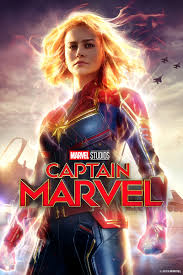

IMDb Pro Watch list Sign In
IMDb Pro Watch list Sign In
Captain Marvel (2019):

.png)
PG-13 | 2h 3min | Action, Adventure, Sci-Fi | 8 March 2019 (USA)
Captain Marvel is a 2019 American superhero film based on the Marvel Comics character Carol Danvers. Produced by Marvel Studios and distributed by Walt Disney Studios Motion Pictures, it is the twenty-first film in the Marvel Cinematic Universe (MCU). The film is written and directed by Anna Boden and Ryan Fleck, with Geneva Robertson-Dworet also contributing to the screenplay. Brie Larson stars as Danvers, alongside Samuel L. Jackson, Ben Mendelsohn, Djimon Hounsou, Lee Pace, Lashana Lynch, Gemma Chan, Annette Bening, Clark Gregg, and Jude Law. Set in 1995, the story follows Danvers as she becomes Captain Marvel after Earth is caught in the center of a galactic conflict between two alien civilizations.
Development of the film began as early as May 2013. It was officially announced in October 2014 as Marvel Studios' first female-led superhero film. Nicole Perlman and Meg LeFauve were hired as a writing team the following April after submitting separate takes on the character. The story borrows elements from Roy Thomas's 1971 "Kree–Skrull War" comic book storyline. Larson was announced as Danvers at the 2016 San Diego Comic-Con, with Boden and Fleck hired to direct in April 2017. Robertson-Dworet soon took over scripting duties, with the remainder of the cast added by the start of filming. Location shooting began in January 2018, with principal photography beginning that March in California before concluding in Louisiana in July 2018. Jackson and Gregg—who, among others, reprise their roles from previous MCU films—were digitally de-aged in post-production to reflect the film's 1990s setting.
Captain Marvel premiered in London on February 27, 2019, and was theatrically released in the United States on March 8. The film grossed over $1.1 billion worldwide, making it the first female-led superhero film to pass the billion-dollar mark. It ranks as the fourth-highest-grossing film of 2019, and became the ninth-highest-grossing superhero film and 22nd-highest-grossing film overall. The film received praise for the performances of the cast, particularly that of Larson. A sequel is in development.
Captain Marvel grossed $426.8 million in the United States and Canada, and $701.4 million in other territories, for a worldwide total of $1.128 billion.[4] It had a worldwide opening of $456.7 million, the sixth-biggest of all time.[173] Deadline Hollywood estimated the film had a total production and advertising cost of $300 million, and predicted that it would surpass its break-even point by reaching $750 million within its first week.[2] It is the third-highest-grossing film of 2019.[174] On April 2, 2019, the film crossed the $1 billion mark worldwide, becoming the first female-led superhero movie to do so,[175] as well as the seventh Marvel title, the 19th Disney film, and 38th film overall.
The film's first 24 hours of advance ticket sales, which began on January 7, 2019, ranked third on Fandango for an MCU film, behind Avengers: Infinity War and Black Panther, and second on Atom Tickets, behind Infinity War.[177] According to Fandango, Captain Marvel had the third largest advanced ticket sales of any MCU film, behind Infinity War and Black Panther, and surpassed Wonder Woman and Aquaman (2018) during the same time period.[178] The film made $61.4 million on its first day, including $20.7 million from Thursday night previews, which was the fifth-highest total for a Marvel film and second-highest for a March release behind Batman v Superman: Dawn of Justice (2016). It made $153.4 million in over its opening weekend, the third-best March opening and seventh-highest of the MCU.[2] The film remained in first during it second weekend with $69.3 million, the second-highest sophomore weekend in March behind Beauty and the Beast (2017).[179] The film grossed $35.2 million in its third weekend, dropping to second behind Us.[180] In the following weeks it dropped to third, fifth, sixth, and fourth, before rising to second again in its eighth weekend with the release of Avengers: Endgame.[181]
On its first day of international release, the film made $5.9 million from South Korea and $1.7 million in France, as well as $2.51 million from Thursday night previews in China, the fourth-best for an MCU film in the country. Through its first two days of release in foreign territories the film made $44 million, including $9.1 million in South Korea, $3 million in Brazil, $2.9 million in France and $2.5 million in Australia. It also grossed $34 million on its first day in China, the third-best superhero opening day ever in the country. The film went on to have a foreign opening weekend of $302.4 million, the fifth-best of all time. Its largest markets were China ($89.3 million), South Korea ($24.1 million), the UK ($16.8 million), Brazil ($13.4 million, the second-best opening of any film in the country's history) and Mexico ($12.8 million, fifth-best ever).[173] Through its first 12 days of release, the film's highest-grossing foreign countries were China ($135.7 million), South Korea ($37.5 million), the United Kingdom ($32.9 million), Brazil ($26.1 million) and Mexico ($25.7 million).[182] By April 2, the film's largest foreign markets were China ($152.3 million), South Korea ($43.7 million), the UK ($43.3 million), Brazil ($34.5 million) and Mexico ($31.8 million).
Click here to go back..